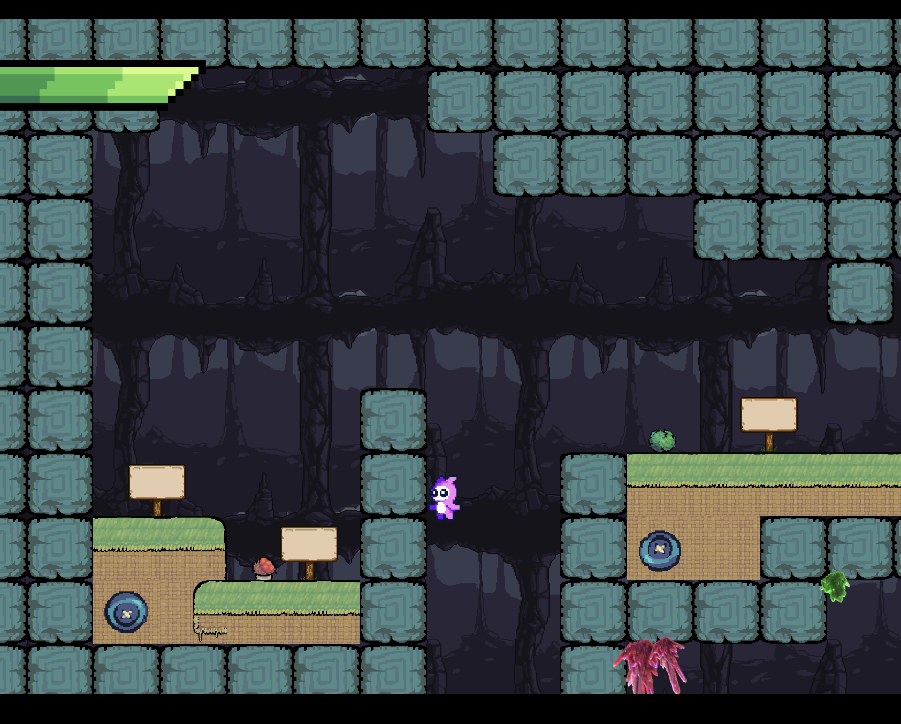
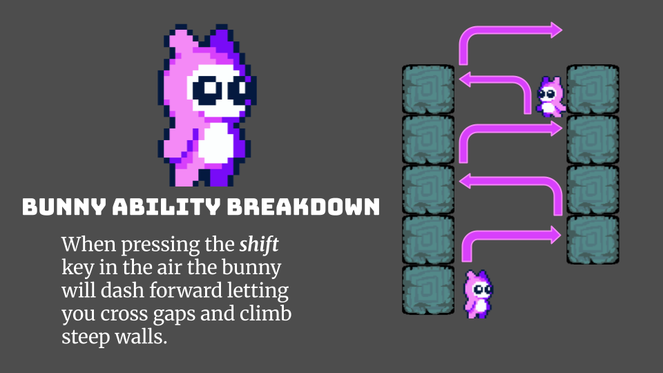
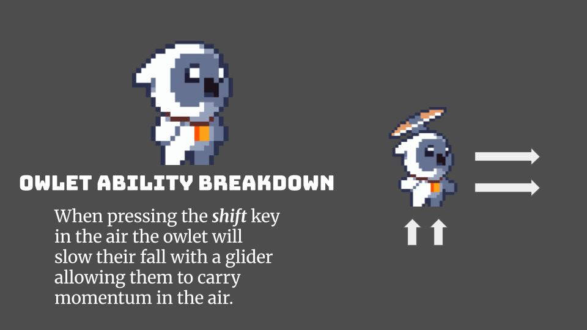
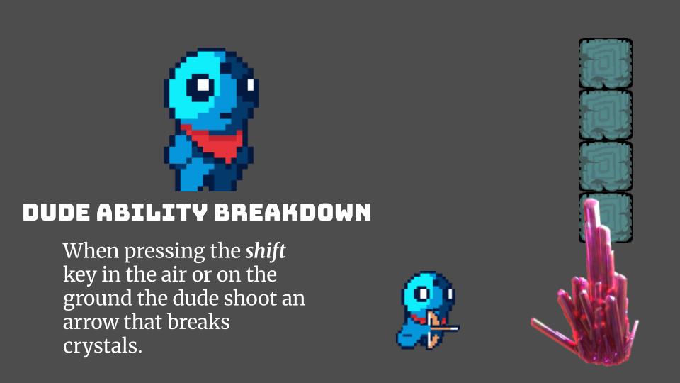
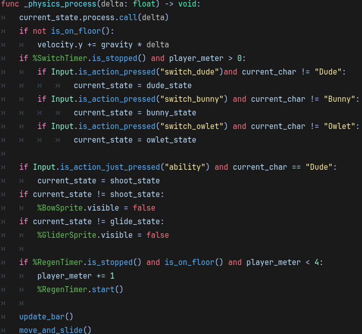
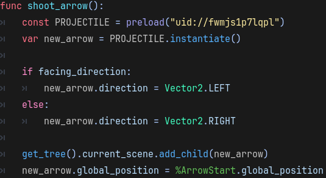

Published Godot Game
Swap Monsters
How do you build one cave that works for three characters with completely different movement abilities? I designed the route around switching between a dash, a glide, and a projectile, then built the systems that make those choices matter.

Why I built it: I wanted to learn Godot by building and publishing a complete game. Although the course provided a starter framework, I cleared the existing game content and rebuilt the player systems, mechanics, and level around my own three-character concept.
Project context: Each student worked independently from the same Endless Access Moddable Platformer foundation. I replaced and customized the player systems and developed a new cave game with my own mechanics, route, progression, and character interactions.
How to Play
Player Controls
- Move
- W, A, S, D
- Jump
- Spacebar
- Use Ability
- Left Shift
- Switch Character
- Left, Up, and Right Arrow Keys
The Design Question
Making every character feel necessary.
I wanted switching to be more than choosing a different sprite. Each character needed a movement or interaction ability that solved a different kind of obstacle. The level then had to introduce those abilities clearly and create reasons to combine them.
Explore→Read the obstacle→Choose a character→Spend a switch→Use the ability→Recover and continue
Character System
Three abilities, one shared route.

Bunny: Air Dash
Crosses gaps and gains height along steep walls. The dash turns open space into a route instead of a dead end.

Owlet: Glide
Slows the fall while preserving horizontal momentum. This makes long gaps manageable when a dash would drop too quickly.

Dude: Projectile
Fires an arrow that breaks crystal obstacles. Dude creates access while Bunny and Owlet handle traversal.
Process and Iteration
Seven working days from controller to published level.
Assembled the first animated character and added randomized footstep sounds.
Removed the original player script and built a state-based controller with movement, jumping, attacks, wall interaction, and air movement.
Added three characters and reset the air dash and double jump when switching.
Separated the dash, bow, and glide, then adjusted the camera so players could read the route at higher speed.
Added a four-stage switching meter, recharge behavior, breakable barriers, and meter-restoring crystals.
Sketched the cave route and planned where each ability would become useful.
Assembled the planned level, added instructional signs and finishing details, and published the playable build.
Level Design
Teaching through the route.
The cave introduces one problem at a time. Signs explain the immediate action, but the geometry does the real teaching: gaps ask for Bunny's dash, long drops ask for Owlet's glide, and crystal barriers ask for Dude's arrow. Later sections combine those ideas and make the player decide when switching is worth spending a meter segment.
Technical Evidence
Organizing movement, swapping, and interactions.

State and Movement
Character Controller
The controller routes movement through the active character state, applies shared physics, manages the switching meter, and hides ability-specific visuals when they are not active.

Ability System
Spawning the Arrow
Dude's ability instantiates a projectile, sets its direction from the player's facing direction, adds it to the scene, and positions it at the arrow marker.
Resource System
Four-stage Switching Meter
Each character swap costs one stage. The meter regenerates while the player is grounded, and breakable green crystals restore a stage. That turns switching from a free menu choice into a limited resource.
State MachineTimersCollisionsProjectilesSignals
Debugging
Thirty minutes. One line.
The bow kept spawning arrows incorrectly. It took about 30 minutes to trace the problem to one line of code. Finding it took much longer than fixing it, but it reinforced why keeping the controller and ability states organized mattered.
Instructor Recognition
Best Unique Character Abilities
My Urban Arts instructor selected the project for “Best Unique Character Abilities” and nominated me for the RIT Alumni Award based on my progress during the course.
Looking Back
“I'm probably proudest of how organized the code is and how smooth the swaps and abilities feel.”
What I learned: The biggest thing that clicked for me was scripting in Godot. Once I understood how different scripts interacted with each other, adding new mechanics became much easier.
What I would improve: With more time, I would test the level with players who had never seen it before and use their feedback to improve navigation, balance, and edge cases.
Attribution
What I built and what I started with.
Built in Godot using the Endless Access Moddable Platformer starter framework. I replaced and customized the player systems, programmed the three-character switching and abilities, created the switching-meter and breakable-object mechanics, and designed the cave's route and progression. Visual and audio assets came from credited third-party sources, including CraftPix, itch.io asset creators, Endless Access Studio, and Pixabay.